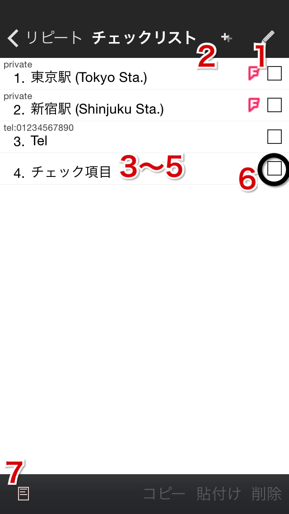

チェックリスト

- 編集モード切替
- チェック項目追加：Newの行タップ
- チェック項目並べ替え
- チェック項目削除
- （クリップボードへ）コピー
- （クリップボードから）貼付け
- クリップボードクリア
- チェック項目一括追加
- メモOn/Off（チェック時にメモに追加）
- →チェック項目詳細：行選択
- チェック項目直接編集：行長押し（Exitで解除）
- チェックボックスチェックOn・URLスキームでアプリ起動・foursquareチェックイン：行ダブルタップ
- チェックボックスチェックOn/Off：チェックボックスタップ
- →前画面に戻る：右スワイプ
→Help Topへ →Taskuma Topへ